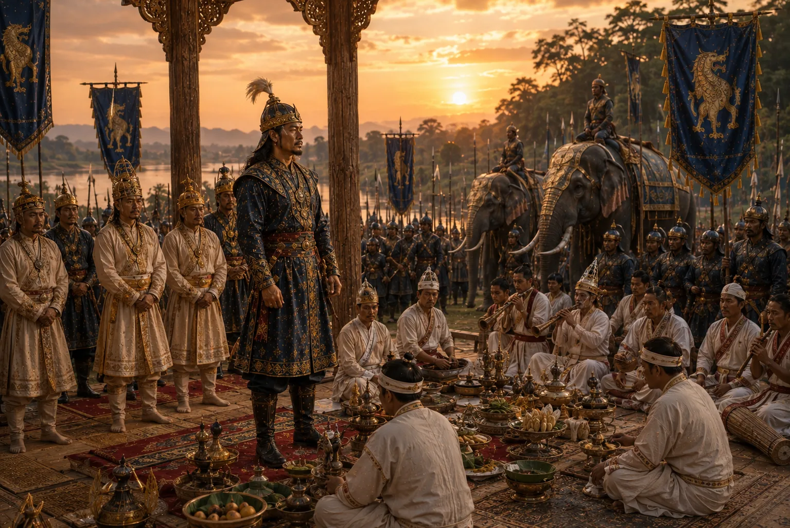

Solemn Celebration of the Rikkhvan Ceremony
c. 1548 · Swarganarayan’s kingdom

Performance of the ancient Tai Rikkhvan ritual to restore royal vitality, longevity, and invincibility in battle.
Sources have not yet been catalogued for this record.
People: Suklenmung (Garhgayan Roja)
Open this scene in the interactive archive · Follow this event on MAP